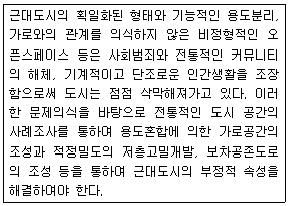
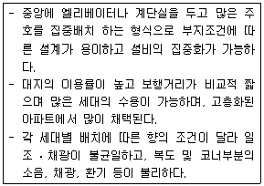
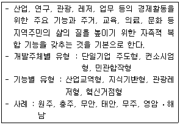
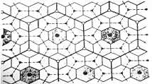
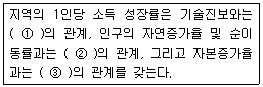
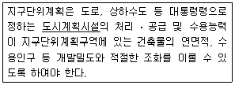
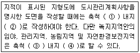

도시계획기사 (2009-08-30 기출문제)
1과목: 도시계획론
1. 개발로 인하여 기반시설이 부족할 것으로 예상되나 기반시설을 설치하기 곤란한 지역을 대상으로 건폐율이나 용적률을 강화하여 적용하기 위하여 지정하는 구역을 무엇이라고 하는가?
- 개발밀도관리구역
- 개발관리구역
- 시가화조정구역
- 성장억제구역
(정답률: 알수없음)

2. 도시계획에 활용되는 자료원에 대한 접근방법을 직접적ㆍ간접적이냐에 따라 1차 자료와 2차 자료로 분류할 때 다음 중 2차 자료에 해당하는 것은?
- 통계자료조사
- 현지조사
- 면접조사
- 설문조사
(정답률: 알수없음)
3. 계획이론 중 종합적 계획이 갖는 비현실성에 대한 비판과 보완에서 출발하여, 논리적 일관성이나 최적의 해결 대안을 제시하는 것보다는 지속적인 조정과 적용을 통하여 계획의 목표를 추구하는 접근 방법을 제시한 이론과 학자의 연결이 옳은 것은?
- Friedmann - 교류적 계획 (Transactive planning)
- Davidoff - 옹호적 계획 (Advocacy planning)
- Faludi - 체계적 계획 (System planning)
- Lindblom - 점진적 계획 (Incremental planning)
(정답률: 알수없음)
4. 다음의 인구예측방법 중 기준년도의 인구와 출생률, 사망률, 인구이동 등의 인구변화요인을 고려하여 장래인구를 추정하는 방법은?
- 정주모형법
- 집단생잔법
- 비교유추법
- 로지스틱법
(정답률: 알수없음)
5. 다음 중 도로망에 대한 설명이 옳지 않은 것은?
- 격자형은 지형이 평탄한 도시에 적합하며 고대 및 중세 봉건도시에서 흔히 볼 수 있으며 대표적인 도시로는 뉴욕과 필라델피아를 들 수 있다.
- 방사형은 중심지를 기점으로 주요간선로를 따라 도시 개발축이 형성된다.
- 방사환상형은 횡적인 연결은 환상선으로, 도심부와 교외 및 외곽은 방사선으로 연결하는 형태로, 도쿄와 파리가 대표도시다.
- 혼합형은 두 가지 이상 혼합된 형태로, 도심부는 방사환상형이고 교외부는 격자형이 대부분이다.
(정답률: 알수없음)
6. 다음 중 우리나라의 도시계획에 관한 설명으로 옳지 않은 것은?
- 도시기본계획은 도시의 미래상을 제시하는 20년 단위의 장기적이고 종합적인 계획이다.
- 도시계획의 지위와 관련하여, 특별시ㆍ광역시ㆍ시 또는 군의 관할 구역에서 수립되는 다른 법률에 따른 토지의 이용ㆍ개발 및 보전에 관한 계획은 도시계획의 기본이 된다.
- 지역주민은 공청회, 공람 등을 통하여 도시계획과정에 직ㆍ간접적으로 참여할 수 있다.
- 도시관리계획은 광역도시계획과 도시기본계획에 부합되어야 한다.
(정답률: 알수없음)
7. 다음 중 공동구의 장점에 해당하지 않는 것은?
- 빈번한 노면굴착에 의한 교통 장애를 제거할 수 있다.
- 노상공작물의 철거로 노면의 이용가치가 증가한다.
- 수용하는 도관의 유지관리가 확실하다.
- 기존 가로에 도관의 이설 및 신설이 용이하다.
(정답률: 알수없음)
8. 미래의 도시계획 방향으로 가장 적합하지 않는 것은?
- 개발 지향적 도시계획
- 에너지 절약적 도시계획
- 환경 친화적 도시계획
- 주민 참여적 도시계획
(정답률: 90%)
9. 20세기 이후에 발표된 도시계획헌장들 중 최초의 도시계획 헌장으로서, 이후 전 세계 도시계획 및 설계분야의 발전에 많은 영향을 미친것은?
- 뉴어바니즘 (New Urbarnism) 헌장
- 메가리드 (Megaride) 헌장
- 아테네 (Athens) 헌장
- 마추피추 (Machu-Picchu) 헌장
(정답률: 알수없음)
10. 다음 중 제1종 지구단위계획의 지정대상이 아닌 지역은?
- 계획관리지역에 위치하는 산업개발진흥지구
- 개발행위허가제한지역
- 지하 및 공중공간을 효율적으로 개발하고자 하는 지역
- 주택재건축사업을 위해 지정된 정비구역
(정답률: 알수없음)
11. 공간계획을 국토계획, 지역계획, 도시계획, 단지계획 및 개별 건축계획 등으로 구분하는 기준은 무엇인가?
- 계획대상구역의 계획 소요 시간 차이
- 계획대상구역의 경제적 수준과 범위
- 계획대상구역의 공간적 범위
- 계획대상구역의 토지이용상태
(정답률: 알수없음)
12. 도시의 부양능력에 비하여 지나치게 많은 인구가 집중하여 인구적으로만 비대해진 도시화를 무엇이라 하는가?
- 역도시화 (de-urbanization)
- 어반스프롤 (urban sprawl)
- 외부경제 (external economy)
- 가도시화 (pseudo-urbanization)
(정답률: 알수없음)
13. 토지이용계획의 수립과정을 상향적 접근과 하향적 접근으로 구분할 때, 이에 대한 설명이 옳지 않은 것은?
- 상위계획의 지침을 받아 도시의 기본계획을 설정하는 것은 상향적 접근이다.
- 도시 내 지구수준의 문제점 해결을 우선하는 것은 상향적 접근이다.
- 기성시가지의 유형별 대책을 수립하는 것은 상향적 접근이다.
- 도시 차원에서 도시 전체의 기본 구조를 중시하는 것은 하향적 접근이다.
(정답률: 64%)
14. 튀넨(Von Thunen)의 지대이론에 대한 설명이 옳지 않은 것은?
- 지대는 토지의 위치에 따라 달라진다.
- 지대는 농산물이 생산되는 토지와 그 농산물이 판매되는 시장과의 거리에 의해 결정된다.
- 생산성이 같은 토지라도 시장으로부터의 거리에 따라 지대가 달라진다.
- 시장에서 멀어질수록 인구 밀도는 낮고 지대는 높다.
(정답률: 알수없음)
15. 다음 중 주간선도로와 보조간선도로, 보조간선도로와 집산도로의 배치간격 기준이 모두 옳은 것은?
- 250m 내외, 500m 내외
- 500m 내외, 250m 내외
- 500m 내외, 1km 내외
- 1km 내외, 500m 내외
(정답률: 알수없음)
16. 도시의 구성요소로 가장 거리가 먼 것은?
- 활동(activity)
- 토지(land)
- 배치(arrangements)
- 시민(citizen)
(정답률: 알수없음)
17. 도시의 일반적인 특징을 설명한 내용이 옳지 않은 것은?
- 지적 엘리트와 전문가들로 구성된 공동체로서 다양한 서비스와 재화가 집중된다.
- 1차 산업 비율이 낮고, 2ㆍ3차 산업 비율이 높은 비농업적 활동이 주로 일어난다.
- 행정ㆍ경제ㆍ문화의 중심지 기능을 담당한다.
- 동질적인 집단의 성격이 강하고 주민 간의 상호접촉이 지속적이고 직접적으로 발생한다.
(정답률: 알수없음)
18. 다음 중 토지이용계획의 역할로 알맞지 않은 것은?
- 도시의 외연적 확산을 촉진시킨다.
- 토지이용의 규제와 실행수단을 제시해 준다.
- 계획적인 개발을 유도하여 난개발을 억제시킨다.
- 도시의 현재와 장래의 공간구성과 토지이용 형태가 결정된다.
(정답률: 알수없음)
19. 계획이란 계속되는 선택을 통해 가장 적절한 미래의 행위를 결정하는 일련의 절차이며 행동이야말로 계획 행위의 궁극적인 산물이라고 정의한 학자는?
- Davidoff 와 Reiner
- Healey
- Harris 와 Ullman
- Howard
(정답률: 알수없음)
20. 도시기본계획에서 토지이용계획을 위한 토지의 용도 구분에 해당하지 않는 것은?
- 보전용지
- 시가화용지
- 보전예정용지
- 시가화예정용지
(정답률: 알수없음)
2과목: 도시설계 및 단지계획
21. 다음 중 단지계획의 주요 목표에 해당하지 않는 것은?
- 부도심 개발을 통한 과밀의 억제
- 보행환경의 개선
- 단지 내 통과 교통의 억제
- 주민 생활의 편리성을 고려한 공공시설의 설치
(정답률: 알수없음)
22. 계획밀도를 물리적 밀도ㆍ활동밀도ㆍ입체밀도로 구분할 때, 다음 중 물리적 밀도에 포함되지 않는 것은?
- 건폐율
- 용적률
- 세대밀도
- 토지이용률
(정답률: 알수없음)
23. 토지의 용도별 수요를 결정하는 중요한 요소로서, 토지수요 예측에 있어 비교적 쉽고 간편한 추정이 가능하여 자주 이용되는 것은?
- 토지이용현황
- 지역 내 교통시설현황
- 한계자원량
- 인구
(정답률: 알수없음)
24. 제1종 지구단위계획에 대한 설명으로 옳지 않은 것은?
- 토지 이용의 합리화ㆍ구체화 및 미관의 개선과 양호한 환경을 확보하기 위하여 수립한다.
- 상위계획과 관련계획의 내용과 취지를 반영하여야 한다.
- 계획관리지역이나 개발진흥지구를 체계적ㆍ계획적으로 개발 또는 관리하기 위한 계획이 필요하다.
- 제1종 지구단위계획구역 안에서 건축물을 건축하고자 하는 자가 대지의 일부를 공공시설 부지로 제공하는 경우 건폐율ㆍ용적률 및 높이제한을 완화하여 적용할 수 있다.
(정답률: 알수없음)
25. 다음 중 래드번(Radburn)계획의 특징으로 거리가 먼 것은?
- 주택내부의 공간 배치에 있어서 거실과 침실은 차량 접근 도로 쪽에 가깝게 배치하였다.
- 보행자도로의 형성 및 보도와 차도는 입체적으로 분리하였다.
- 쿨데삭(cul-de-sac)형의 가로망을 일정한 간격으로 배열하고 쿨데삭 주변에 주택을 배치하였다.
- 슈퍼블럭 내 도로는 단일기능 도로체계로 변화하였다.
(정답률: 알수없음)
26. 공동주택의 배치 시 도로 및 주차장의 경계선으로부터 공동주택의 외벽까지 최소 얼마 이상을 띄워야 하는가?
- 1m
- 2m
- 3m
- 5m
(정답률: 알수없음)
27. 근린주구론을 적용하고, 전원도시계획의 이상을 받아 저밀도개발을 원칙으로 개발된 영국 런던 근교의 신도시는?
- Harlow
- Cumbernauld
- Welwyn
- Milton Keynes
(정답률: 알수없음)
28. 오픈스페이스(open space)에서 시민이 누릴 수 있는 것과 거리가 먼 것은?
- 자유감
- 자발적 활동
- 새로운 생활환경의 접촉
- 제한된 도시생활의 연속
(정답률: 알수없음)
29. 1875년 영국에서 불결한 도시주거환경을 제거하기 위해 새로이 건설되는 주택의 상하수도 시설과 정원크기 및 주변 도로의 폭 등 주거환경기준을 규제하는 목적으로 제정된 법은?
- 건축법(building code)
- 미관지구에 관한 법(law of beautification district)
- 단지조성법(site planning act)
- 공중위생법(public health act)
(정답률: 알수없음)
30. 공원ㆍ녹지 체계의 유형 중 일정 폭의 녹지를 직선적으로 길게 조성하는 것으로 완충녹지에서 많이 볼 수 있으며, 인도의 찬디가르(Chandigarh)에서 볼 수 있는 것은?
- 집중형
- 분산형
- 대상형
- 격자형
(정답률: 알수없음)
31. 지구단위계획에서의 환경관리계획에 관한 설명 중 옳지 않은 것은?
- 구릉지 등의 개발에서 절토를 최소화하고 절토 면이 드러나지 않게 대지를 조성하여 전체적으로 양호한 경관을 유지시킨다.
- 구릉지에는 가급적 고층 위주로 계획한다.
- 대기오염원이 되는 생산 활동이 주거지 안에서 일어나지 않도록 한다.
- 쓰레기 수거는 가급적 건물 후면에서 이루어지도록 하고, 폐기물 처리시설을 설치하는 경우에는 바람의 영향을 감안하고 지붕을 설치하도록 한다.
(정답률: 알수없음)
32. 국지도로의 형태 중 하나인 루프형(loop) 도로에 관한 다음의 설명 중 옳지 않은 것은?
- 불필요한 차량의 진입이 배제된다.
- 막다른 골목(cul-de-sac)과 같은 주거환경의 안전성이 확보된다.
- 교차점이 많아 방향성이 불분명하다.
- 외곽부에서 내부로의 진입이 제한되므로 차량의 우회교통이 발생한다.
(정답률: 알수없음)
33. 다음 중 도시설계에 관하여 아래와 같이 주장한 미국의 사회학자는?

- Herbert Gans
- Jane Jacobs
- Kevin Lynch
- Paul D.Spreiregen
(정답률: 알수없음)
34. 공동주택을 건설하는 주택단지에서 공해방지 또는 조경을 위한 식재 등의 필요한 조치를 하기 위하여 확보하여야 하는 녹지의 기준 면적은?
- 해당 주택단지 면적의 10%에 해당하는 면적
- 해당 주택단지 면적의 20%에 해당하는 면적
- 해당 주택단지 면적의 30%에 해당하는 면적
- 해당 주택단지 면적의 40%에 해당하는 면적
(정답률: 알수없음)
35. 다음의 설명에 해당하는 아파트의 평면유형은?

- 중정형
- 단층형
- 복층형
- 탑상형
(정답률: 알수없음)
36. 도시생활권의 위계를 소ㆍ중ㆍ대생활권으로 구분할 때, 소생활권에 알맞은 생활편익시설로 보기 어려운 것은?
- 운동장
- 약국
- 백화점
- 동사무소
(정답률: 알수없음)
37. 다음 중 페리(C.A. Perry)의 근린주구이론에서 근린단위(neighborhood unit)의 구분 기준이 되는 시설은?
- 동사무소
- 우체국
- 놀이터
- 초등학교
(정답률: 알수없음)
38. 주차장의 장애인전용 주차단위구획 규모 기준이 옳은 것은?(단, 아래의 수치는 「너비×길이」이며, 평행주차형식 외의 경우임.)
- 2.0m x 3.6m 이상
- 2.3m x 5.0m 이상
- 2.5m x 5.1m 이상
- 3.3m x 5.0m 이상
(정답률: 알수없음)
39. 하나의 건축물에 설치하는 근린생활시설 등의 면적이 얼마를 넘는 경우에 주차 또는 물품의 하역 등에 필요한 공터를 설치하여야 하는가?(단, 주택건설기준 등에 관한 규정에 따름.)
- 500m2
- 1,000m2
- 1,500m2
- 2,000m2
(정답률: 알수없음)
40. 제2종 지구단위계획구역 안에서의 건폐율 등의 완화적용에 관한 설명이 옳은 것은?
- 제2종 지구단위계획구역 안에서는 관련 규정에 의하여 제2종 지구단위계획으로 용도지역 및 용도지구에서의 건축물의 건축 제한 등에 관한 규정에 의한 건축물의 용도, 종류 및 규모 등을 완화하여 적용할 수 없다.
- 개발진흥지구(계획관리지역에 지정된 개발진흥지구를 제외한다)에 지정된 제2종 지구단위계획구역에서는 아파트와 연립주택의 건축이 가능하다.
- 제2종 지구단위계획구역 안에서는 제2종 지구단위계획으로 당해 용도지역 또는 개발진흥지구에 적용되는 건폐율의 150% 및 용적률의 200% 이내에서 건폐율 및 용적률을 완화하여 적용할 수 있다.
- 도시지역에 개발진흥지구를 지정하고 해당 지구를 제2종 지구단위계획구역으로 지정한 경우에는 제한된 건축물 높이의 120% 이내에서 높이제한을 완화하여 적용할 수 있다.
(정답률: 알수없음)
3과목: 도시개발론
41. 다음 중 지하공간의 개발 배경으로 적절하지 않은 것은?
- 우리나라는 비교적 안정적인 사암으로 지질이 구성되어 있고 암반의 규모 및 면적이 넓어 대규모 지하 공간 개발에 적합한 자연적 요건을 가지고 있다.
- 급격한 도시화와 수도권 편중에 의한 인구 유입에 따른 개발 가능한 토지 공급의 부족문제를 해결할 수 있다.
- 과도한 집중으로 인해 도시의 기능이 저해되고 있는 현상을 지하공간의 개발을 통해 완화할 수 있다.
- 도시미관을 저해하는 시설 또는 혐오시설을 지하에 배치하여 지상공간을 더욱 쾌적하게 활용할 수 있다.
(정답률: 알수없음)
42. 다음 중 도시개발법상 도시개발구역의 전부를 환지방식으로 시행하는 경우 시행자로 지정될 수 있는 자는?
- 국가 또는 지방자치단체
- 한국관광공사
- 「지방공기업법」에 따라 설립된 지방공사
- 도시개발구역의 토지소유자가 설립한 조합
(정답률: 알수없음)
43. 다음 중 정비사업을 계획적으로 시행하기 위한 정비구역으로 지정할 수 있는 지역 기준이 옳지 않은 것은?
- 순환용주택을 건설하기 위하여 필요한 지역
- 철거민이 50세대 이상 규모로 정착한 지역이거나 인구가 과도하게 밀집되어 있고 기반시설의 정비가 불량하여 주거환경이 열악하고 그 개선이 시급한 지역
- 건축물이 과도하게 밀집되어 있어 그 구역 안의 토지의 합리적인 이용과 가치의 증진을 도모하기 곤란한 지역
- 최저고도에 미달하는 건축물이 당해 지역 안의 건축물의 바닥면적합계의 2분의 1이상인 지역
(정답률: 알수없음)
44. 마케팅을 활성화하기 위한 경영활동의 계획에서 반드시 수반되어야 하는 마케팅전략(STP)의 세 단계는?
- Segmentation, Targeting, Positioning
- Stimulating, Tightening, Pursuing
- Standardization, Targeting, Pursuing
- Stimulating, Tightening, Positioning
(정답률: 알수없음)
45. 도시개발기법 중 철도역, 버스정류장 등의 역사를 중심으로 한 복합고밀개발을 통하여 교통 혼잡과 도시에너지의 소비를 경감시키는 방법은?
- 대중교통중심개발(TOD)
- 개발권양도제(TDR)
- 계획단위개발(PUD)
- 연계개발수법(LD)
(정답률: 알수없음)
46. 공공과 민간이 서로 경쟁ㆍ보완하는 파트너형식의 도시개발사업에 관한 설명으로 옳지 않은 것은?
- 민간부문의 입장에서는 사업실패에 따른 위험부담이 없다.
- 공공부문의 입장에서는 초기 투자비용을 민간부문과 나누어 부담함으로써 사업비 부담을 크게 줄일 수 있다.
- 도시개발사업에 있어서 민간부문의 창의적이고 기업적인 마인드를 활용하여 사업의 효율성을 높일 수 있다.
- 공공부문의 입장에서는 파트너인 민간기업의 선정 및 사업운영에 있어서 특혜 시비 및 공공성 유지의 문제점을 지니고 있다.
(정답률: 알수없음)
47. 광장의 종류와 결정기준에 관한 설명이 옳지 않은 것은?
- 경관광장 - 주민의 휴식ㆍ오락 및 경관ㆍ환경의 보전을 위하여 필요한 경우에 하천, 호수, 사적지, 보존가치가 있는 산림이나 역사적ㆍ문화적ㆍ향토적 의의가 있는 장소에 설치한다.
- 주요시설광장 - 건축물의 이용효과를 높이기 위하여 건축물의 내부 또는 그 주위에 광장과의 상호 기능이 저해되지 아니하도록 설치한다.
- 근린광장 - 주민의 사교ㆍ오락ㆍ휴식 등을 위하여 필요한 경우에 생활권역별로 설치한다.
- 역전광장 - 역전에서의 교통혼잡을 방지하고 이용자의 편의를 도모하기 위하여 철도역 앞에 설치한다.
(정답률: 알수없음)
48. 도시개발사업의 시장분석과 관련하여 개발수요분석을 위한 정성적 예측모형에 해당하지 않는 것은?
- 시나리오법
- 인과분석법
- 델파이법
- 판단결정모델
(정답률: 알수없음)
49. 도시개발사업의 경제적 타당성 분석에 관한 설명으로 가장 거리가 먼 것은?
- 경제적 타당성 분석의 전개과정은 상식적이고 합리적으로 도시개발사업을 평가한다.
- 도시개발사업의 경제적 타당성 분석에서 할인율은 고려하지 않는다.
- 경제적 타당성 분석의 평가지표로 순현재가치(NPV), 내부수익률(IRR)을 이용할 수 있다.
- 도시개발에서의 경제적 타당성은 개발 사업에 소요되는 비용보다 발생되는 수익이 많을 때에 인정된다.
(정답률: 알수없음)
50. 파라미터 값의 변화가 정책 분석의 최종결과에 미치는 정도를 분석하여, 정책의 경제성에 가장 큰 영향을 미치는 요소를 도출하고 그 대안을 제시할 수 있게 하는 방법은?
- 민감도분석
- 재무분석
- 경제성분석
- 파급효과분석
(정답률: 알수없음)
51. 다음 도시화의 단계 중 사람들이 좋은 주거환경과 쾌적성에 대한 관심이 증가됨에 따라 신시가지 또는 신도시에 대한 개발 수요가 높아지는 단계는?
- 도시화 단계 (stage of urbanization)
- 교외화 단계 (stage of suburbanization)
- 반도시화 단계 (stage of deurbanization)
- 재도시화 단계 (stage of reurbanization)
(정답률: 알수없음)
52. 복합용도개발(MXD)의 사회적ㆍ경제적 효과로 가장 거리가 먼 것은?
- 도시의 외연적 확산 완화
- 수직 통행의 감소를 통한 교통 혼잡 완화
- 직주근접에 따른 통행거리 감소
- 도시개발 리스크의 감소
(정답률: 알수없음)
53. 현재 인구가 50만명이고 평균 인구증가율이 2.5%인 도시의 경우, 등비급수법에 의해 추정한 20년 후의 인구는?
- 약 70만명
- 약 77만명
- 약 82만명
- 약 90만명
(정답률: 알수없음)
54. 바다, 하천, 호수 등 수변공간을 가지는 육지에 개발된 공간을 무엇이라 하는가?
- 워터프론트
- 역세권
- 지하공간
- 텔레포트
(정답률: 알수없음)
55. 다음 중 아래의 설명에 해당하는 것은?

- 행정중심복합도시
- 기업도시
- 뉴타운
- 혁신도시
(정답률: 알수없음)
56. 시장(market) 및 시장분석(Market Analysis)의 개념과 필요성에 대한 설명 중 옳지 않은 것은?
- 통상적으로 시장이란 상품의 수요와 공급이 많아 양과 가격이 결정되어 거래가 일어나는 곳을 말한다.
- 도시개발사업 측면에서의 시장분석이란 시장의 수요와 공급에 영향을 미치는 요인들을 분석하는 것을 말한다.
- 시장에는 현재 거래가 일어나는 실질시장(actual market)과 거래가 일어날 가능성이 있는 잠재시장(potential market)이 있는데 실질시장(actual market)의 파악이 특히 중요하다.
- 도시개발사업은 공공성이 강한 정책적 사업으로 상당수가 정부의 개입과 통제를 축으로 시장의 수급이 이루어진다는 점에 유의하여 시장분석이 이루어져야 한다.
(정답률: 알수없음)
57. 다음 중 88올림픽 이후의 주택가격 폭등에 대처하기 위한 주택 대량 공급 방안으로 건설된 수도권 1기 신도시만을 나열한 것은?
- 분당, 일산, 평촌, 산본, 중동
- 분당, 일산, 과천, 상계, 목동
- 판교, 송파, 파주, 분당, 일산
- 목동, 과천, 상계, 영통, 광명
(정답률: 알수없음)
58. 개발대상지의 상태에 따라 도시개발을 신개발과 재개발로 구분할 때, 재개발에 대한 설명으로 옳지 않은 것은?
- 주로 농지를 택지로 전용하기 때문에 상대적으로 신개발보다 그 절차가 간단하고 시간이 적게 걸린다.
- 주거 환경을 개선함으로써 주민의 주거안정을 도모하고 공동체적 삶의 질을 향상시키고자 한다.
- 도시성장에 따른 건물 수요의 증강 대응하기 위해 기존의 도시지역 내에서 기존 건물을 새로운 건물로 대체하는 도시개발 과정이다.
- 재개발의 유형은 재개발 대상의 공간적 범위와 토지이용, 재개발방식 등에 의하여 여러 가지로 나눌 수 있다.
(정답률: 알수없음)
59. 다음 중 급속한 도시화와 과도한 개발로 인한 여러 가지 문제점을 극복하여 지속가능한 개발을 할 수 있도록 하기 위하여 등장한 도시개발 패러다임으로 가장 성격이 다른 하나는?
- 유비쿼터스도시 (U-city)
- 어반 빌리지 (Urban Village)
- 컴팩트시티 (Compack City)
- 뉴어바니즘 (New Urbanism)
(정답률: 알수없음)
60. 도시 및 주거환경정비법에 따른 정비사업의 종류가 아닌 것은?
- 도시환경정비사업
- 도시개발사업
- 주택재개발사업
- 주거환경개선사업
(정답률: 알수없음)
4과목: 국토 및 지역계획
61. 국토기본법에서 정한 국토관리의 기본 이념으로 적합하지 않는 것은?
- 국토의 균형 있는 발전
- 경쟁력 있는 국토여건의 조성
- 환경친화적인 국토관리
- 국토에 따른 사회체제의 개혁
(정답률: 알수없음)
62. 국토의 다핵화를 위하여 대전 및 광주 등 제1차 성장거점과 청주, 춘천, 전주 등 제2차 성장거점을 제시하고 전국을 28개의 지역생활권으로 나누어 생활권의 성격과 규모에 따라 5개의 대도시생활권, 17개의 지방도시생활권, 6개의 농촌도시생활권으로 구분하였던 계획은?
- 제1차국토종합개발계획
- 제2차국토종합개발계획
- 제3차국토종합개발계획
- 제4차국토종합계획
(정답률: 알수없음)
63. 다음 중 미국 지역개발계획의 선구적 사례가 된 것은?
- 다모달개발사업
- 테네시계곡개발사업
- 실리콘밸리사업
- 리서치트라이앵글사업
(정답률: 알수없음)
64. 어떤 지역의 총 고용인구는 500,000명이고 이 중 비기반 부문의 고용인구가 400,000명이다. 그런데 이 지역에 외부지역으로의 수출만을 목적으로 하는 기반활동이 새롭게 입지하여 5,000명의 고용증가가 예상된다면 이 지역의 총 고용인구는 얼마나 증가하는가?
- 10,000명
- 15,000명
- 20,000명
- 25,000명
(정답률: 알수없음)
65. 다음 중 국토계획의 필요성에 해당되지 않는 것은?
- 유한적 국토자원의 효과적 활용
- 국토 관련 행정의 중앙집중 및 규제력 강화
- 지역격차와 불균형 문제 해소
- 상위정책간 마찰조정과 하위정책에 대한 지침제시
(정답률: 알수없음)
66. 다음 그림은 크리스탈러의 중심지 계층에 관한 포섭원리 중 어떤 원리를 나타내는 것인가?

- 시장원리
- 교통원리
- 행정원리
- 확산원리
(정답률: 알수없음)
67. 성장거점이론에 있어서 선도산업이 갖는 특성이 아닌 것은?
- 진보된 수준의 기술을 요구하는 새롭고 동적인 산업이다.
- 다른 부분과 강한 산업적 연계를 갖는다.
- 성장을 유도하고 그 성장을 다른 곳으로 확산시킨다.
- 다른 산업에 비하여 성장속도는 느리나 안정된 성장을 보인다.
(정답률: 알수없음)
68. 국가경제의 발전단계를 공업화 이전단계, 초기공업화 단계, 과도단계, 경제발전의 4단계로 구분하여 이에 따른 공간조직이 어떻게 전개되는지를 설명하고, 분극적 개발의 일반이론을 주장한 학자는?
- 페로우 (F.Perroux)
- 프리드만 (J. Friedmann)
- 베리 (B.Berry)
- 허쉬만 (A. Hirschman)
(정답률: 알수없음)
69. 베버(A.Webber)의 공업입지 최소비용이론의 세 가지 입지인자에 해당하지 않는 것은?
- 수송비
- 노동비
- 원료비
- 집적이익
(정답률: 알수없음)
70. 인구성장의 상한선을 미리 정한 후에 미래 인구를 추계하는 인구예측모형으로, 곡선의 모양이 S자형의 대칭곡선으로 이루어진 것은?
- 지수모형
- 수정된 지수모형
- 로지스틱모형
- 곰페르츠모형
(정답률: 알수없음)
71. 다음 중 지역 간 소득격차에 분석에 사용하는 지표로 거리가 먼 것은?
- 변동계수 (Coefficient of Variation)
- 지니계수 (Gini's Coefficient)
- 트레스점수 (Tress Score)
- 테일지수 (Theil's Index)
(정답률: 알수없음)
72. 다음 중 부드빌(J.R.Boudeville)에 의한 지역 구분에 속하지 않는 것은?
- 낙후지역 (lagging region)
- 계획지역 (planning region)
- 분극지역 (polarized region)
- 동질지역 (homogeneous area)
(정답률: 알수없음)
73. 균형발전이론 중 도농접근법에 대한 설명으로 옳지 않은 것은?
- 도농통합 개발 방법이란 도시와 그 주변 농촌이 통합되고 개발되는 것을 의미한다.
- 다른 지역과의 자유무역을 억제하고 비교우위의 원칙이나 다국적 기업의 이념을 제한한다.
- 생산의 다양화, 자원의 공영제, 기회의 균등을 중시한다.
- 외부의 원조를 받아 균형발전을 도모한다.
(정답률: 알수없음)
74. 인간이 필요로 하는 최소한의 재화와 서비스 품목을 최저 소득집단에게 공급해 주고자 하는 지역개발전략은?
- 농촌개발전략
- 기본수요전략
- 오지개발전략
- 성장거점전략
(정답률: 알수없음)
75. 지역의 경제성장은 노동, 자본, 기술 등 생산요소의 증가에 의하여 결정되며 이러한 생산요소가 지역 간 이동함에 따라 장기적으로는 지역 간 소득격차를 좁힌다고 주장하는 이론은?
- 중심-변경이론
- 종속이론
- 쇄신확산이론
- 신고전이론
(정답률: 알수없음)
76. 수위도시의 인구가 1,200만명이고 다음으로 규모가 큰 3개 도시의 인구가 각각 600만, 400만, 300만 명일 때, 종주화 지수(primacy index)는?
- 0.11
- 0.92
- 1.20
- 2.00
(정답률: 알수없음)
77. 국토기본법상 국토조사의 실시에 관한 설명이 옳지 않은 것은?
- 국토조사는 국토에 관한 계획 또는 정책의 수립, 국토정보체계의 구축 등을 위하여 실시한다.
- 국토해양부장관이 국토조사를 실시하되 중앙행정기관의장 또는 지방자치단체의 장에게 조사에 필요한 자료의 제출을 요청할 수 있다.
- 국토해양부장관은 국토조사의 효율적인 시행을 위하여 필요한 경우에는 조사를 전문기관에 의뢰할 수 있다.
- 국토조사는 정기조사와 수시조사로 나뉘며, 정기조사는 매 5년마다 실시한다.
(정답률: 알수없음)
78. 지역성장이론 중 콥-더글라스(Cobb-Douglas)의 생산함수에 관한 아래 설명에서 ( )에 들어갈 말이 순서대로 옳은 것은?

- ① 정(正) ② 정(正) ③ 정(正)
- ① 정(正) ② 정(正) ③ 부(負)
- ① 정(正) ② 부(負) ③ 정(正)
- ① 정(正) ② 부(負) ③ 부(負)
(정답률: 알수없음)
79. 클라센(L. H. Klaassen)의 지역 분류 기준은?
- 성장률과 소득수준
- 산업별 인구규모
- 동질성과 의존성
- 사회간접자본과 생산활동
(정답률: 알수없음)
80. 다음 중 결절지역에 해당하지 않는 것은?
- 미국의 표준대도시통계지역(SMSA)
- 클라센(L. Klaassen)의 저개발지역
- 캐나다의 대도시권(CMA)
- 레일리(W. Reilly)의 도시세력권
(정답률: 알수없음)
5과목: 도시계획관계법규
81. 국토기본법에서 규정하고 있는 지역계획의 종류와 그에 대한 설명이 옳지 않은 것은?
- 특정지역개발계획 : 특정한 지역을 대항으로 경제ㆍ사회ㆍ문화ㆍ관광 등을 전략적으로 발전시키기 위하여 수립하는 계획
- 개발촉진지구개발계획 : 다른 지역에 비하여 개발수준이나 소득기반이 현저히 열악한 낙후지역을 대상으로 이의 개발을 촉진하기 위하여 수립하는 계획
- 광역도시계획 : 대상지역의 토지 이용을 합리화하고 그 기능을 증진시키며 미관을 개선하고 양호한 환경을 확보하기 위하여 수립하는 계획
- 수도권발전계획 : 수도권에 과도하게 집중된 인구와 산업의 분산 및 적정배치를 유도하기 위하여 수립하는 계획
(정답률: 알수없음)
82. 도시개발사업의 전부 또는 일부를 환지 방식으로 시행하기 위하여 시행자가 작성하는 환지계획의 내용에 해당하지 않는 것은?
- 환지설계
- 필지별로 된 환지 명세
- 환지예정지 지정 명세
- 필지별로 된 청산 대상 토지 명세
(정답률: 알수없음)
83. 건축물을 건축하고자 하는 자가 그 대지의 일부를 공공시설부지로 제공하는 경우에 당해 건축물에 대한 규정 용적률의 200% 이하의 범위 안에서 대지면적의 제공비율에 따라 용적률을 따로 정할 수 있는 지역ㆍ지구 또는 구역에 해당하지 않는 것은?(단, 국토의 계획 및 이용에 관한 법령에 따름.)
- 도시환경정비사업을 위한 정비구역
- 주택재개발사업을 위한 정비구역
- 상업지역
- 개발진흥지구
(정답률: 알수없음)
84. 다음 중 국민주택기금에 관한 내용이 옳지 않은 것은?
- 국민주택기금은 국토해양부장관이 운용ㆍ관리한다.
- 국민주택기금의 운용ㆍ관리에 관한 사무를 위탁받은 기금수탁자는 대통령령으로 정하는 바에 따라 국민주택기금의 조성 및 운용 상황을 국토해양부장관에게 보고하여야 한다.
- 국토해양부장관이 국민주택기금의 운용에 관한 계획을 수립하려는 경우에는 미리 행정안전부장관과 협의하여야 한다.
- 국민주택기금의 회계연도ㆍ운용계획 및 결산 등에 관하여는 원칙적으로 「국가재정법」을 적용한다.
(정답률: 알수없음)
85. 국토해양부장관은 토지의 투기적인 거래가 성행하거나 지가가 급격히 상승하는 지역과 그러한 우려가 있는 지역으로서 대통령령으로 정하는 지역에 대하여 몇 년 이내의 기간을 정하여 토지거래계약에 관한 허가구역으로 지정할 수 있는가?
- 3년
- 5년
- 7년
- 10년
(정답률: 알수없음)
86. 주택법에 정의된 용어에 대한 설명 중 옳지 않은 것은?
- 공동주택이란 건축물의 벽ㆍ복도ㆍ계단이나 그 밖의 설비 등의 전부 또는 일부를 공동으로 사용하는 각 세대가 하나의 건축물 안에서 각각 독립된 주거생활을 할 수 있는 구조로 된 주택을 말한다.
- 국민주택이란 국민주택기금으로부터 자금을 지원받아 건설되거나 개량되는 주택으로서 주거전용면적이 1호 또는 1세대당 85제곱미터 이하인 주택을 말한다.
- 도시형 생활주택이란 150세대 미만의 국민주택규모에 해당하는 주택으로서 단지형 다세대주택, 원룸형 주택, 기숙사형 주택을 말한다.
- 복리시설이란 주차장, 관리사무소, 담장 및 주택단지 안의 도로 등 주택에 딸린 시설 또는 설비를 말한다.
(정답률: 알수없음)
87. 지구단위계획의 내용과 관련한 아래의 설명 중 밑줄 친 부분에 해당하는 도시계획시설로만 나열된 것은?

- 주차장, 공원, 공공공지
- 공공청사, 대학교, 열공급설비
- 방송통신시설, 유수지, 시장
- 공공직업훈련시설, 도시자연공원, 체육시설
(정답률: 알수없음)
88. 다음 중 개발제한구역관리계획에 대한 설명이 옳은 것은?
- 개발제한구역관리계획은 개발제한구역을 관할하는 시장ㆍ군수가 5년 단위로 수립하여 국토해양부장관의 승인을 받아야 한다.
- 개발제한구역관리계획에는 개발제한구역에서의 취락지구의 지정 및 정비에 대한 사항을 포함한다.
- 개발제한구역관리계획에는 개발제한구역에서 연면적이 1,000m2 이상이 건축물의 건축 및 30,000m2 이상의 토지의 형질변경에 관한 내용을 포함한다.
- 시ㆍ도지사가 개발제한구역의 현황 및 실태에 관한 조사계획을 변경하고자 하는 경우에는 국토해양부장관의 승인을 받아야 한다.
(정답률: 알수없음)
89. 도시계획시설의 결정ㆍ구조 및 설치기준에 관한 규칙에서 도시계획시설인 자동차운전학원, 장례식장, 유통업무설비가 모두 입지할 수 있는 용도지역은?
- 일반주거지역
- 준공업지역
- 유통상업지역
- 생산녹지지역
(정답률: 알수없음)
90. 택지개발사업실시계획의 원칙적인 승인권자는?
- 국토해양부장관
- 국무총리
- 도지사
- 시장ㆍ군수
(정답률: 알수없음)
91. 다음 공원시설 중 휴양시설에 해당하지 않는 것은?
- 야유회장
- 야영장
- 노인복지회관
- 전망대
(정답률: 알수없음)
92. 다음 중 도시개발사업의 시행자가 도시개발사업에 필요한 경비에 충당하기 위하여 지정할 수 있는 것은?
- 상환지
- 시설용지
- 교통용지
- 체비지
(정답률: 알수없음)
93. 다음 중 신고 체육시설업에 해당하지 않는 것은?
- 골프장업
- 썰매장업
- 빙상장업
- 종합 체육시설업
(정답률: 알수없음)
94. 도시계획시설사업의 시행자에 대한 설명이 옳지 않은 것은?
- 원칙적으로 특별시장ㆍ광역시장ㆍ시장 또는 군수가 관할 구역의 도시계획시설사업을 시행한다.
- 도지사는 광역도시계획과 관련되는 경우라도 도시계획시설사업을 직접 시행할 수 없다.
- 둘 이상의 특별시ㆍ광역시ㆍ시 또는 군의 관할구역에 걸쳐 시행되는 도시계획시설사업은 관계 특별시장ㆍ광역시장ㆍ시장 또는 군수가 서로 협의하여 시행자를 정한다.
- 국토해양부장관은 특히 필요하다고 인정되는 경우에는 관계 특별시장ㆍ광역시장ㆍ시장 또는 군수의 의견을 들어 직접 도시계획시설사업을 시행할 수 있다.
(정답률: 알수없음)
95. 건축법에 따른 건축허가의 제한에 관한 설명이 옳지 않은 것은?
- 국토해양부장관은 국토관리를 위하여 특히 필요하다고 인정하는 경우 2년 이내 기간으로 건축허가를 제한할 수 있으며, 1회에 한하여 1년 이내의 범위에서 제한기간을 연장할 수 있다.
- 시ㆍ도지사가 도시계획에 특히 필요하다고 인정하여 건축허가를 제한하고자 하는 경우에는 지방도시계획위원회의 심의를 거쳐야 한다.
- 시ㆍ도지사가 지역계획에 특히 필요하다고 인정하여 시장ㆍ군수ㆍ구청장의 건축허가를 제한하는 경우에는 즉시 국토해양부장관에게 보고하여야 한다.
- 국토해양부장관이 건축허가를 제한하는 경우 그 내용을 상세하게 정하여 허가권자에게 통보하고, 통보를 받은 허가권자는 지체없이 이를 공고하여야 한다.
(정답률: 알수없음)
96. 다음 중 인구유발시설의 기준이 옳지 않은 것은?
- 고등교육법에 따른 학교로서 대학, 산업대학, 교육대학 또는 전문대학
- 공업배치 및 공장설립에 관한 법률에 따른 공장으로서 건축물의 연면적이 200m2 이상인 것
- 중앙행정기관 및 그 소속 기관의 청사 중 건축물의 연면적이 1,000m2 이상인 것
- 복합시설이 주용도인 건축물로서 그 연면적이 25,000m2 이상인 건축물
(정답률: 알수없음)
97. 시설면적이 15,000m2 인 제1종 근린생활시설의 경우 부설주차장의 최소 설치기준은?
- 50대
- 75대
- 100대
- 150대
(정답률: 알수없음)
98. 기간도로로부터 총 세대수가 300세대 미만인 공동주택단지에 이르는 진입도로의 폭은 최소 얼마 이상으로 하여야 하는가?
- 6m
- 8m
- 12m
- 15m
(정답률: 알수없음)
99. 대기오염, 소음, 진동, 악취 그 밖에 이에 준하는 공해와 각종 사고나 자연재해 그 밖에 이에 준하는 재해 등의 방지를 위하여 설치하는 녹지는?
- 경관녹지
- 완충녹지
- 연결녹지
- 공원녹지
(정답률: 알수없음)
100. 다음 도시관리계획에 관한 지형도면의 고시에 대한 내용 중 ( )에 들어갈 말이 모두 옳은 것은?

- ① 1/1,200 ② 1/6,000 ③ 1/3,000 ④ 1/5,000
- ① 1/500 ② 1/5,000 ③ 1/1,500 ④ 1/3,000
- ① 1/1,200 ② 1/5,000 ③ 1/2,000 ④ 1/6,000
- ① 1/500 ② 1/1,500 ③ 1/3,000 ④ 1/6,000
(정답률: 알수없음)
설명: 개발로 인하여 기반시설이 부족한 지역을 대상으로 건폐율이나 용적률을 강화하여 개발을 제한하고, 지속 가능한 도시환경을 조성하기 위하여 지정하는 구역을 개발밀도관리구역이라고 합니다. 따라서, 다른 보기인 개발관리구역, 시가화조정구역, 성장억제구역은 개발밀도관리구역과는 목적과 방식이 다르므로 정답이 될 수 없습니다.